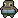

"We have a catastrophe on our hands!"
 Scientist: "The previous morons in charge were both greedy and dumb, and ignored our warnings. They enriched themselves at the expense of our planet. Now we're doomed!"
Senator: "You've been given emergency powers to try to stop the rising water before it's too late. Our factories will produce valuable boxes of widgets which you can use to build new buildings. Good luck, we're all counting on you."
Created for Ludum Dare #42, a 48-hour game jam with the theme of "Running out of space". Created by Luke @deathraygames using RocketBoots, Pixi, Google fonts, and the Steam Lords palette. Open source: v1.2.0
Congratulations! You've stopped the
But your work is not finished! Keep playing and try to get to 100% Happiness, 100% Housing, and 100% Employment.
...or if you want to try out a new land, then refresh the page to play again.